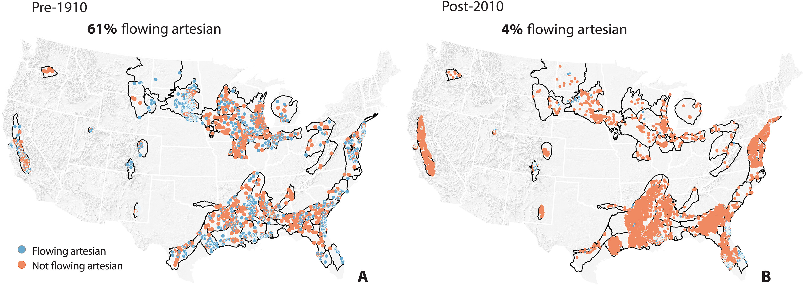

Academic Research
I am a trained geologist and hydrologist and study water resources.
I conduct research on:
- Groundwater resources and their changes over time
- Streamflow and rainfall-runoff (storm) events
- Field-based hydrology and data collection
- Historical environmental data restoration using machine learning
Please see my publications and published datasets for additional information. Teaching and mentorship of undergraduate students are incorporated in all of my work.
Publications and Published Datasets
- Publications List (Google Scholar)
-
Published Datasets
- Groundwater Measurements Pre-1910 in the United States (HydroShare)
- Stream and Atmospheric Temperature, Jack and Laura Dangermond Preserve, CA (KNB Eco Informatics)

U.S. Geological Survey groundwater measurements restored in dissertation research (Publication: Hilton and Jasechko, 2023; Data: HydroShare).